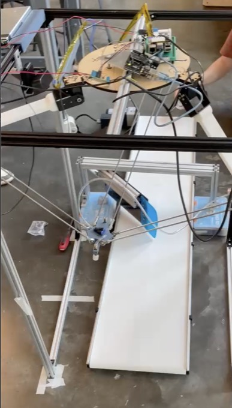
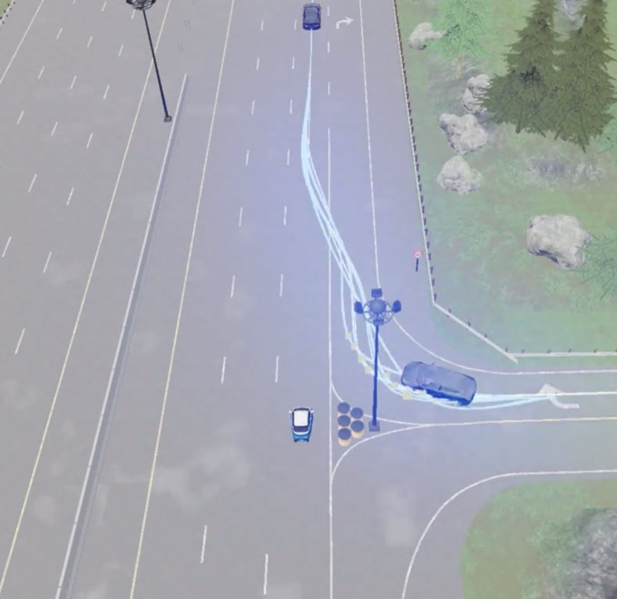
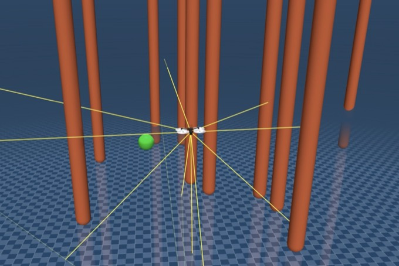

Perception · Learning · Real hardware
Leo Shaw
AI & Robotics Engineer
M.S. Artificial Intelligence Engineering · Carnegie Mellon
B.S. Mechanical Engineering · Rutgers
I build systems that connect perception, learning, and control to real hardware. My background combines graduate AI work at CMU with hands-on semiconductor field engineering.
Python · PyTorch · Computer vision · Reinforcement learning · Hardware integration
Seeking roles in robotics, embodied AI, and applied ML systems.
Neural Atlas
Hover for skills; click to open. On mobile, tap first.
Selected projects
All projects & experience →
Robotic Sorting
Integrated vision, camera calibration, and delta-arm control to sort objects on a moving conveyor.
99% perception accuracyControlled tests · ~50% physical sorting

Autonomous Driving
Built a closed-loop simulation stack combining A* routing, PPO local planning, and PID control.
83% merge success80% left-turn success · simulation

Drone Navigation
Developed and evaluated RL policies for quadrotor obstacle avoidance and stable arrival.
45.3% goal-hover successEvaluated in simulation
More projects: Seeing Through Occlusion → · Solar-Powered Terrain Walker →
Research & Experience
NEXA · Manufacturing AI
Built document-ingestion and retrieval workflows using OCR/VLM pipelines, Python, and structured data for manufacturing troubleshooting.
AI infrastructure built around messy, real-world technical data.
View research
Ulvac Technologies
Delivered 30+ equipment retrofit projects across six high-volume fabs, debugging controls, vacuum, RF, and motion subsystems.
Production-critical hardware and customer-facing troubleshooting.
View experience